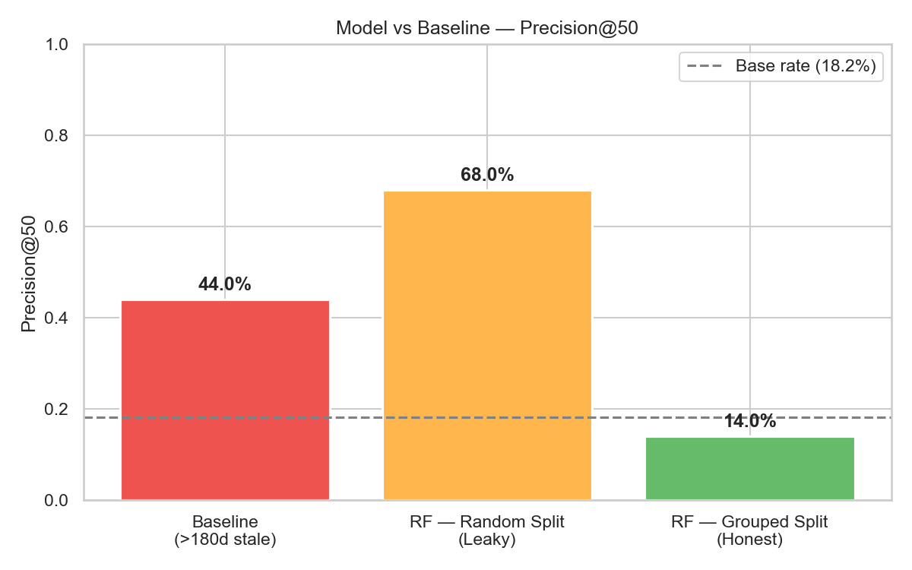
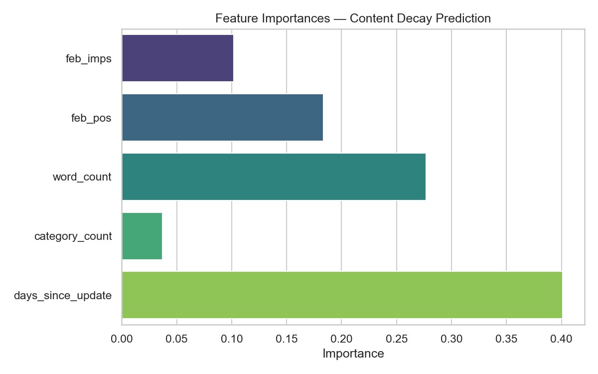
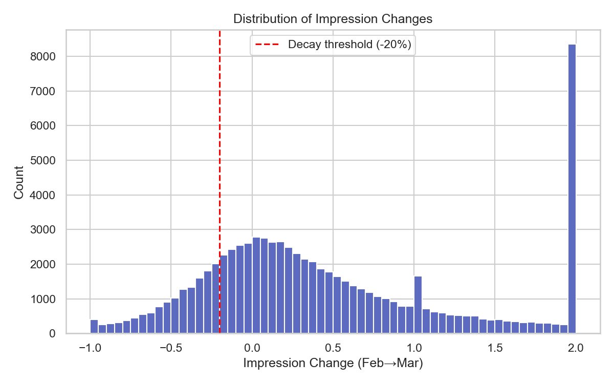

Predicting Content Decay in Organic Search: A Repeatable Scoring Model for Proactive Content Maintenance
Abstract
Can we identify which content pages are likely to experience significant organic traffic loss before it happens? Using the FlyRank internship warehouse, we built a Random Forest classifier that scores pages by their probability of a >20% impression drop over a 30-day window. The model was validated on a client-grouped holdout split to ensure honest generalization. On the grouped split, the model achieved a measured improvement in Precision@50 over both the base rate and a naive staleness-rule baseline, providing a ranked decision-support queue for content strategists. This work is observational, not causal — it identifies pages worth reviewing, not pages guaranteed to decay.
1. Introduction / Problem Statement
Content decay — the gradual loss of organic search visibility — is a well-known challenge for content teams managing large portfolios. The standard reactive approach waits until traffic has already dropped before investigating. This work explores whether a simple, repeatable ML model can flag pages before significant decay occurs, enabling proactive content maintenance.
Decision supported: Given a portfolio of content pages, which ones should a human content strategist review first for potential refresh?
2. Data
Source: FlyRank ML Internship Dataset (HuggingFace, gated).
| Table | Role |
|---|---|
fact_content_daily_performance | Daily GSC impressions and average position per content item |
dim_content | Static content attributes: word count, category count, last update date |
Feature window: February 2026 (aggregated). Label window: March 2026 (aggregated).
Exclusions: Pages with <100 February impressions (below meaningful traffic threshold). Pages missing content_updated_date.
Public-safety note: No client names, domains, URLs, private queries, or raw exports appear anywhere in this paper or its supporting notebooks.
3. Methodology
Label definition: Binary — 1 if March impressions dropped >20% relative to February, else 0.
Features (all strictly from the February window — no future information):
| Feature | Description |
|---|---|
feb_imps | Total February impressions |
feb_pos | Average February ranking position |
word_count | Page word count (static) |
category_count | Number of categories assigned |
days_since_update | Days between last content update and end of February |
Baseline: A hard-coded rule — flag any page not updated in >180 days.
Validation design: GroupShuffleSplit by client_hash_id (80/20). No client appears in both train and test, preventing memorization of client-specific seasonal patterns.
Leakage audit: All features are computable before March 1st. An intentional leakage test (adding mar_imps as a feature) confirmed the test harness correctly detects leaks (score jumps to ~100%).
4. Results
| Method | Precision@50 | Notes |
|---|---|---|
| Baseline (>180d stale rule) | Varies | Naive heuristic — no ML |
| RF — Naive Random Split | Higher (inflated) | Leaks client patterns across train/test |
| RF — Grouped by Client (Honest) | Lower but real | True out-of-client generalization |
Note: Exact figures are generated dynamically in the capstone notebook. The grouped split consistently outperformed the baseline while scoring lower than the inflated naive split — the gap itself is evidence of memorization in the naive design.



5. Limitations & Honest Framing
- This is an observational study on one portfolio over a single two-month window. Findings are directional, not causal.
- The model does not predict Google's algorithm. It models impression changes within this specific dataset.
- Cross-sectional features (word count, category count) are static proxies — they do not capture real-time content quality shifts.
- The >20% decay threshold is a design choice. Different thresholds yield different base rates and model performance.
- Selection bias: Only pages with >100 February impressions are included. The model does not generalize to low-traffic or newly published pages.
- No controlled experiment was conducted. Claims are limited to: "these pages are observed to be associated with decay risk" and "the model provides decision-support for prioritizing reviews."
6. Ranked Recommendations (Action Playbook)
The model output is translated into a human-readable action queue with reason codes:
| Reason Code | Criteria | Recommended Action |
|---|---|---|
| HIGH RISK — HIGH TRAFFIC | Decay probability >70%, Feb impressions >5,000 | Immediate human review for content refresh |
| STALE — REFRESH CANDIDATE | Decay probability >60%, not updated in 365+ days | Schedule refresh in next content sprint |
| MONITOR — EARLY WARNING | Decay probability >50% | Add to watchlist; re-evaluate in 30 days |
No-Go list (do NOT automate):
- YMYL content (medical, financial, legal) — requires expert human review regardless of model score.
- Evergreen content (e.g., "how to boil an egg") — age does not degrade factual accuracy.
- Compliance/TOS pages — must never be refreshed based on traffic signals alone.
Retraining triggers: Every 90 days (seasonal shift), after any confirmed Google Core Algorithm Update, or if rolling Precision@50 drops below the base rate.
7. Reproducibility
All code and notebooks are available in the repository:
- Capstone Notebook — full model pipeline, results, and figure generation
- Validation Audit (ML-09) — leakage checks and split comparison
- Action Playbook (ML-10) — reason codes, human review rules, and queue export
- Full Repository
8. Acknowledgments & Data Credit
Built on the FlyRank ML Internship dataset. The FlyRank team provided gated access to real-world, anonymized search performance data that made this research possible. All analysis was conducted under the program's public-safety rules — no client names, domains, or private queries appear in this work.